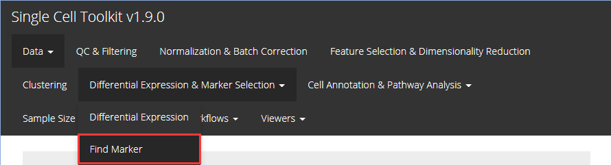
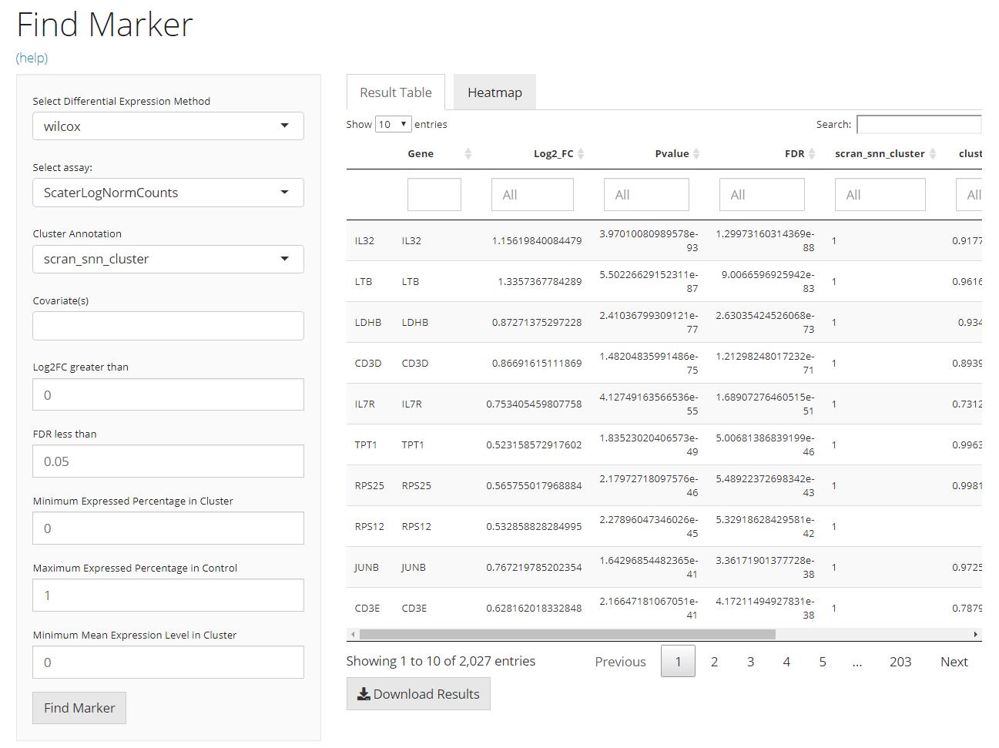
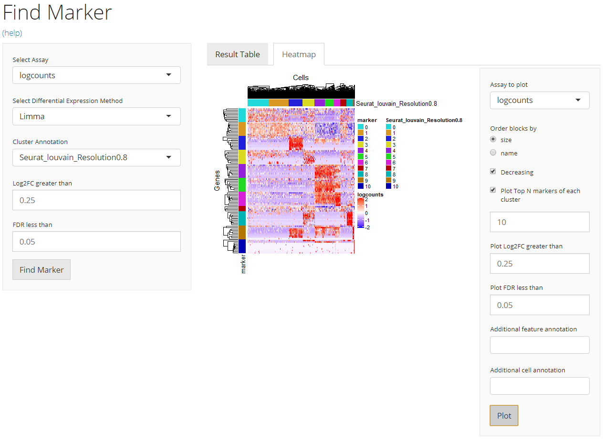

This section comes together with the previous section Differential Expression. The basic strategy singleCellTK (SCTK) uses to find biomarkers is to iteratively identify the significantly up-regulated features of each group of cells against all the other cells. This means, the function we have (findMarkerDiffExp()) is a wrapper of functions that do differential expression (DE) analysis, which would be invoked in a loop. For the detail of the DE functions and DE computation methods, please refer to the Differential Expression documentation.
To view detailed instructions on how to use these methods, please select ‘Interactive Analysis’ for shiny application or ‘Console Analysis’ for using these methods on R console from the tabs below:
Entry of The Panel
From anywhere of the UI, the panel for marker finding can be accessed from the top navigation panel at the circled tab shown below.

The UI is constructed in a sidebar pattern. The sidebar on the left is mainly for the parameters essential for running the marker finding algorithm. The main panel on the right is for demonstrating the results, including the marker table and the heatmap visualization.

Main Panel - Result Table
The table is shown in the figure above. In this tab, there will be a table for all the markers detected and passed the filters. It is constructed with 5 columns, including “Gene” - the default feature identifiers (not necessarily a gene ID or symbol, depending on the background SCE object); “Log2_FC”, “Pvalue” and “FDR” - the statistics that supports the detection; and the fifth one that labels which cluster the marker is for, and the column name is exactly the “cluster annotation” selected in the sidebar. Users can also download the table in comma-separated value (CSV) format, by clicking “Download Result Table” button.
Main Panel - Heatmap

A heatmap will be automatically generated after running the marker detection process. Users can tweak the options for plotting by clicking on the blue clog button on the top-left.
N markers, as N is the input numeric value in the numeric input below the checkbox, for each cluster will be plotted. The ranking is based on Log2FC value. When less than N markers are detected for one cluster, all of them will be plotted.Parameters
As per SCTK’s strategy, the primary input is limited to an SingleCellExperiment (SCE) object, which has been through preprocessing steps with cluster labels annotated. While the iteration is a fixed pattern, the parameters needed are rather simple:
sce <- findMarkerDiffExp(inSCE = sce, useAssay = "logcounts", cluster = "cluster", covariates = NULL, log2fcThreshold = 0.25, fdrThreshold = 0.05)Here all arguments execpt the input SCE object (inSCE) are set by default. method can only be chosen from the table above. cluster and covariates should be given a single string which is present in names(colData(inSCE)). cluster is required for grouping cells, while covariates is optional for DE detection. log2fcThreshold and fdrThreshold are numeric and has to be set in plausible range. log2fcThrshold has to be positive and fdrThreshold has to be greater than zero and less than one.
The returned SCE object will contain the updated information of the markers identified in its metadata slot.
Preprocessing
To demonstrate a simple and clear example, here we use the “PBMC-3k” dataset from “10X” which can be easily imported with SCTK functions. The preprocessing only includes necessary steps to get cluster labels (i.e. QC and filtering are excluded).
library(singleCellTK)
sce <- importExampleData("pbmc3k")
sce <- scaterlogNormCounts(sce, "logcounts")
# Go through the Seurat curated workflow to get basic clusters
sce <- runSeuratNormalizeData(inSCE = sce, useAssay = "counts")
sce <- runSeuratFindHVG(inSCE = sce, useAssay = "seuratNormData")
sce <- runSeuratScaleData(inSCE = sce, useAssay = "seuratNormData")
sce <- runSeuratPCA(inSCE = sce, useAssay = "seuratScaledData")
sce <- runSeuratUMAP(sce)
sce <- runSeuratFindClusters(inSCE = sce, useAssay = "seuratScaledData")
# Optional visualization
plotSCEDimReduceColData(inSCE = sce, colorBy = "Seurat_louvain_Resolution0.8", conditionClass = "factor", reducedDimName = "seuratUMAP")Get Markers
Then we call findMarkerDiffExp() on the clustered data, with the cluster annotation just attached, which by default named with "Seurat_louvain_Resolution0.8".
sce <- findMarkerDiffExp(inSCE = sce, useAssay = "logcounts", cluster = "Seurat_louvain_Resolution0.8")Results
After successfully running findMarkerDiffExp(), the result marker table would be stored in metadata(sce). This table can be fetched by:
markerTable <- metadata(sce)$findMarker
head(markerTable)Similarly to the Differential Expression section, we also provide a automated and organized heatmap plotting for the markers:
plotMarkerDiffExp(sce)Note that when plotting the heatmap, the genes that are identified as up-regulated in multiple clusters will be considered only for the one cluster with the highest fold-change, while all of them are still kept in the table in metadata.